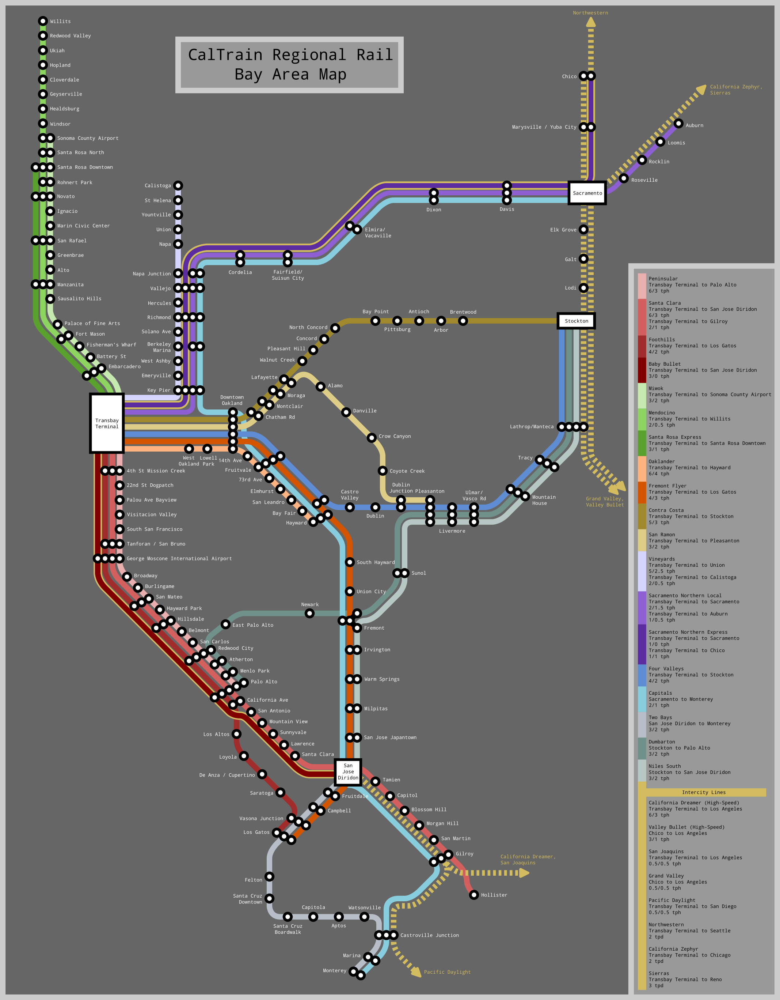

[svg]![[svg]](map.svg){kind=link}
I drew this map to complement my 1931 Market Street Subway map. It is also completely compatible with my 1937 Market Street Subway map.
In the 1990s, California embarks on a massive heavy rail expansion and electrification project.
As part of this massive investment, the transbay tube is built, rails are added to the lower deck of the Golden Gate Bridge, a tunnel is dug through downtown Oakland, and a heavy rail viaduct is built along the San Francisco waterfront.
The extant heavy rail commuter and intercity lines are rehabilitated, expanded, grade separated, electrified, and enhanced with high frequency service and extra tracks (up to 4).
New rail lines are built through Haywards Pass, down the San Ramon Valley, and over a new Carquinez Strait rail bridge to Vallejo and Napa. The old Sacramento Northern route is redirected east through Pittsburg and Antioch to Stockton.
High speed rail corridors are created, interlined in 4 or 6 tracks with electrified low and higher speed service, down the Santa Clara Valley, over Pacheco Pass and through the Central Valley up to Chico and down to LA.
Trains!!